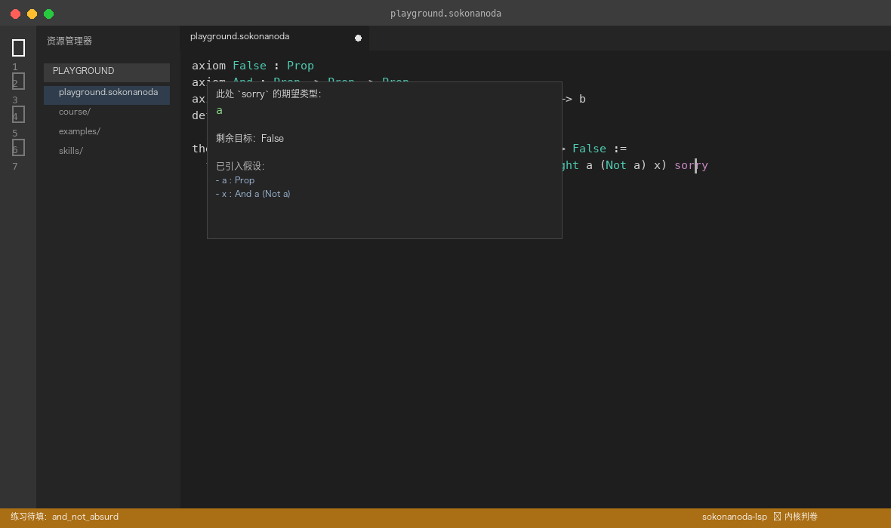
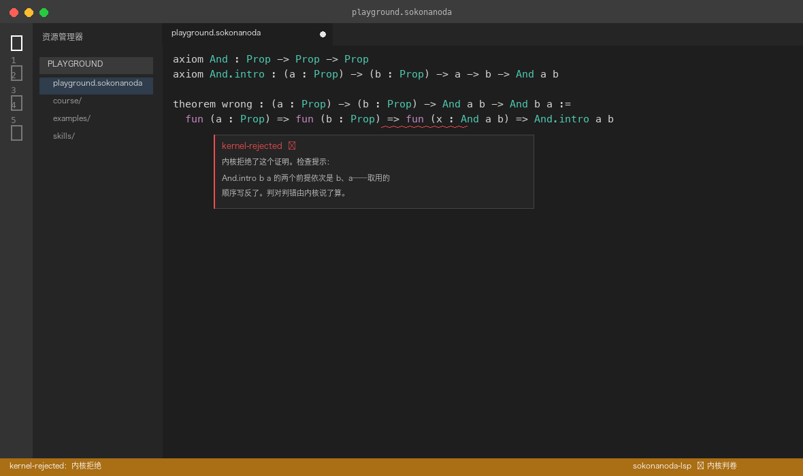
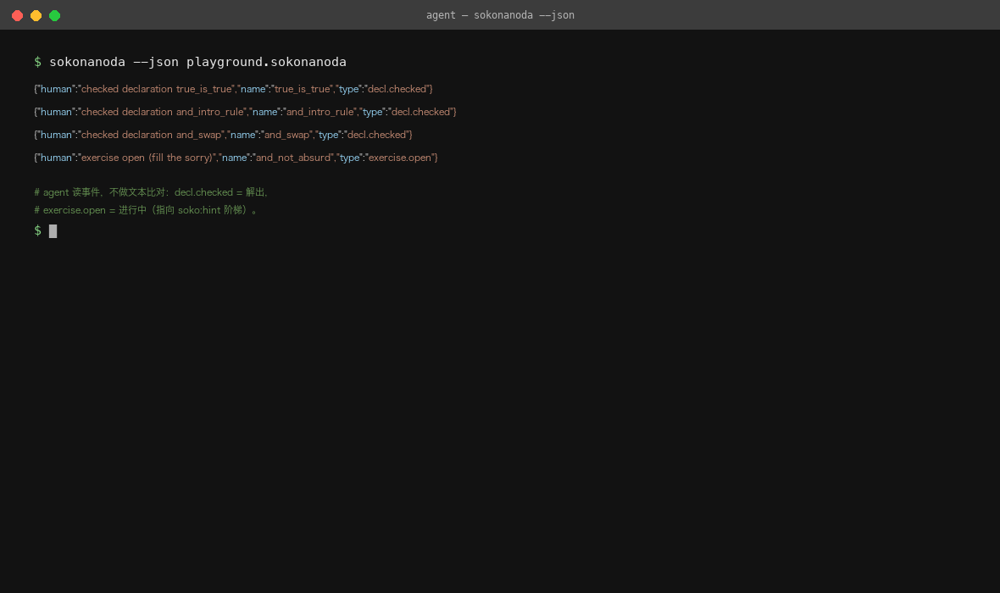

A self-contained Lean-4-style teaching compiler: every proof is graded
by a real kernel, the editor hints while you type, and code agents can
drive the whole loop. One VS Code extension — no toolchain required.
Prefer a pinned version? Grab the VSIX for your platform from
GitHub Releases
— the extension bundles its own LSP and CLI binaries,
no Rust, Lean or any toolchain needed.
Paste it into any code agent (opencode / Claude Code / Codex / Cursor / …):
it clones the repository, reads AGENTS.md, prepares the
version-pinned environment, then teaches and grades on the canvas.
No cargo, no official Lean toolchain; grading always goes through the
--json kernel events. Skills and protocol it reads:
Agents.
See it in action
Four moments people hit first. Everything shown exists in the extension.

Stuck? Hover the sorry
With the cursor on a sorry, the hover shows
that hole's expected type, the remaining goal, and the
hypotheses in scope — expected types are computed through definitions
(Not a unfolds to a -> False, so the hole
expects a). You know what's missing before you write.

The kernel decides
Grading always goes through the real kernel — no text matching. A wrong
proof gets a diagnostic with a teaching hint; a correct one is valid
Lean, verbatim.
A skeleton from keystroke one
Type funintro in the value position: the popup preselects the
“replace source” item from the first character; after accepting, the
skeleton lands with sorry selected — your next input
overwrites it directly.

Your code agent can teach too
Any code agent (Claude Code / opencode / Codex / Cursor / …) can grade
and drive the teaching loop — copy the
install prompt and it prepares everything
itself. Grading reads the --json kernel events; no text
matching.